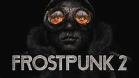

Homeworld 3
Homeworld 3 adalah sekuel yang telah lama dinantikan dari seri Homeworld, menawarkan pertempuran luar angkasa dengan grafis yang memukau dan mekanika permainan yang mendalam. Pemain mengendalikan armada kapal luar angkasa dalam pertempuran taktis tiga dimensi, menghadapi tantangan strategis yang kompleks. Game ini menambahkan elemen medan seperti bangkai kapal dan asteroid, memberikan kedalaman taktis baru dalam pertempuran.
Frostpunk 2
Frostpunk 2 melanjutkan kisah kota terakhir di Bumi yang berjuang untuk bertahan hidup di tengah cuaca ekstrem. Sebagai pemimpin, pemain harus membuat keputusan sulit untuk memastikan kelangsungan hidup penduduk, mengelola sumber daya, dan menghadapi tantangan moral. Game ini memperkenalkan dinamika baru dalam manajemen kota dan konflik sosial, menambah kedalaman strategi dan narasi.
Age of Mythology: Retold
Age of Mythology: Retold adalah versi remaster dari klasik RTS yang menggabungkan mitologi dengan strategi real-time. Pemain dapat memilih peradaban mitologis seperti Yunani, Mesir, atau Norse, dan menggunakan kekuatan dewa serta makhluk mitos dalam pertempuran. Versi ini menghadirkan grafis yang ditingkatkan dan gameplay yang disempurnakan, memberikan pengalaman baru bagi penggemar lama dan pemain baru.